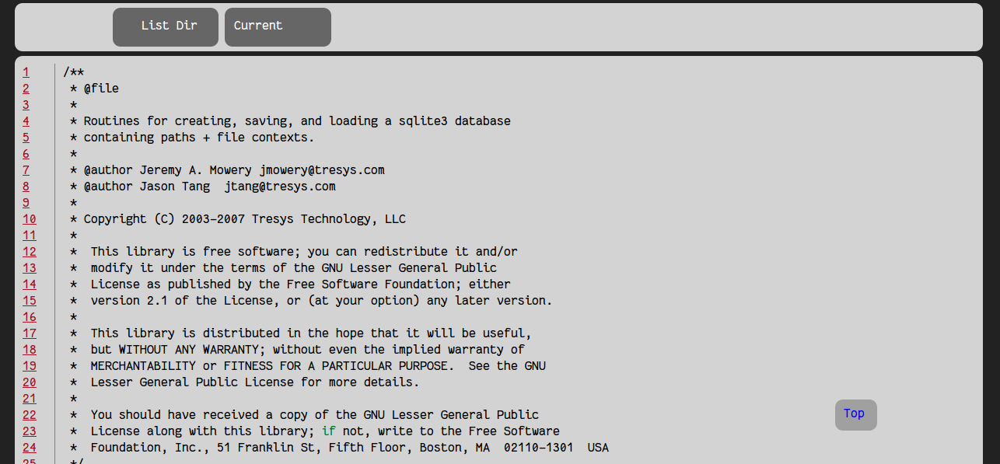

c2html.py是主要程序，c2html文件夹中是c2html.py生成 的html文件需要
用到的样式等文件。 使用c2html.py需要跟两个参数第一个参数是源码根目
录路径;第二个参数是你要生成的文件明。
比如Python-2.7.5源码在~/Download目录下. 当前终端在~/Desktop下。
python c2html.py ~/Download/Python-2.7.5 viewpy
通过上面的命令我们就在桌面上的viewpy中生成了python的源码html文件，当然文件多了转换需要时间。然后再设置一下web服务 软件就可以访问了。
图例
图1.首页
图2.随机点击查看一个文件
图3.有高亮

点击图2中list dir返回首页目录，点击Current返回首页并跳到当前文件所在目录的位置